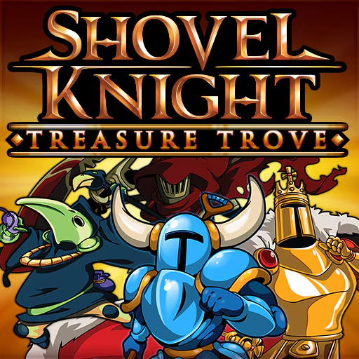
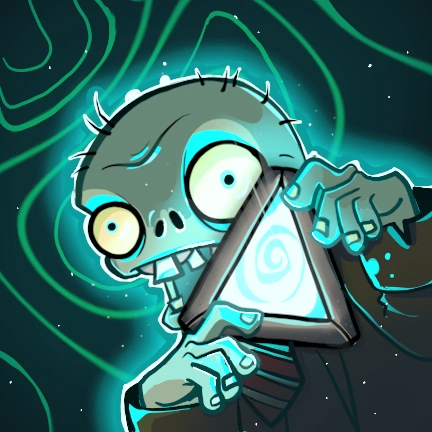
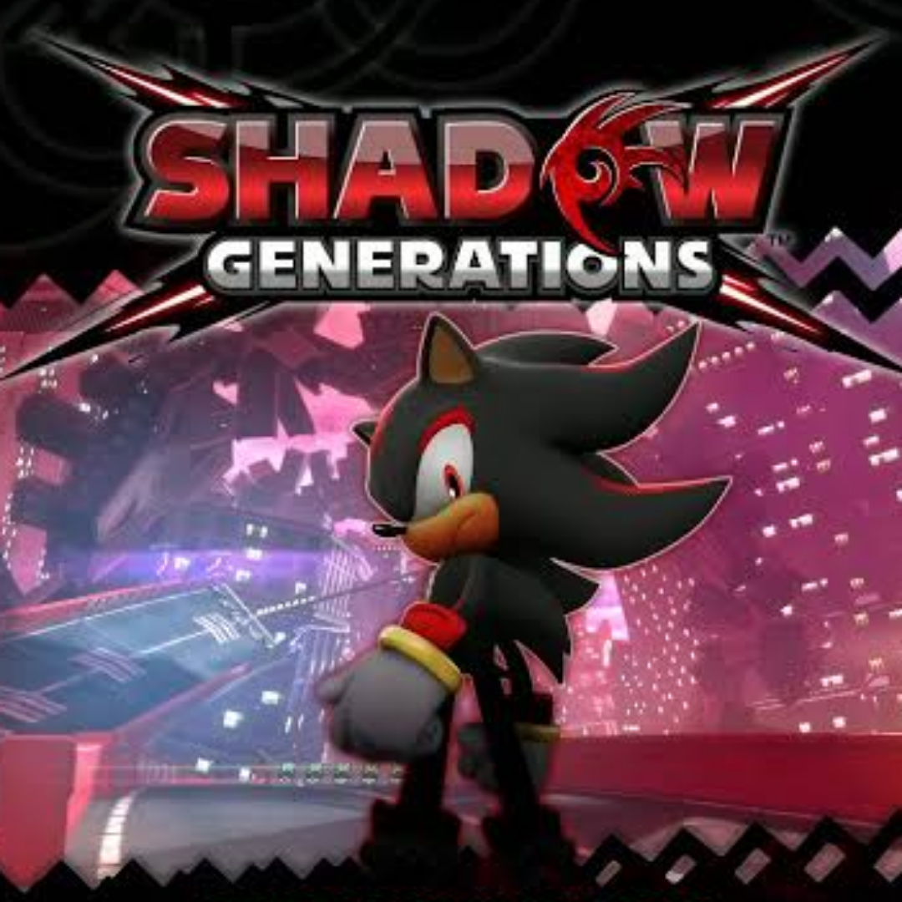

My favourite games
I personally am all but a competitive gamer, I love platformers, tower defense games and some RPG's, I also play variety, I'm very open to different experiences. If I had to give a top 5 favourite games of all time, it would be:
-

5. Shovel knight treasure trove
-

4. Plants vs Zombies 2 Altverz
-

3. Shadow generations
-

2. Pokémon emerald
-

1. Megaman X4
All of these game have had a lot of influence on the person I am today, and the types of games I want to make. What I think all of these games have in common is that you can tell the developers knew exactly what to do with the game, and what the fans wanted out of these games, Which I can respect a lot. Two of these games perfected the gameplay of their predecessors (pokemon emerald and megaman X4) while the other two were really innovative in their genre. I could make hour long video essays for each of these games, and what they did so excellently.